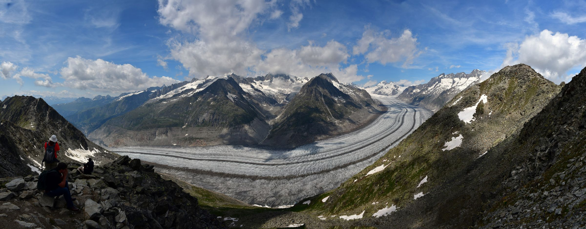

Land use and planting
Battery storage is a quiet, low-rise use of land. Site layout and perimeter planting are part of the permit design of every project, worked out with the local authority rather than promised in a brochure.

In 2024, Germany curtailed 9.4 terawatt hours of renewable electricity. Wind farms switched off, solar disconnected. Energy that was there and is gone.
Source: Bundesnetzagentur / SMARD, congestion management data for 2024. The glacier stands for what is irreversible. It is an image, not an equation.
On a windy afternoon, Germany often produces more renewable electricity than the grid can absorb. Prices fall, turbines are told to stop and the surplus is lost. A battery charges in exactly those hours.
In the evening, when the wind has dropped and demand rises, the marginal power plant is usually gas-fired. A battery that discharges then displaces that plant. This shift, from surplus hours into gas hours, is the mechanism behind storage-related CO2 savings.
Whether a specific battery achieves it depends on how it is dispatched. That is why we publish potentials with their method, not promises.
per year: the calculated avoidance potential of our current portfolio once built, if its 2.46 GWh of storage shift one full cycle per day from renewable surplus into hours that gas would otherwise serve. The factor behind it is Fraunhofer ISE's: roughly 0.37 tonnes of CO2 per megawatt hour shifted.
Calculation: 2,455 MWh of storage capacity across all eight projects x one full cycle per day x 365 days x 0.37 t CO2 per MWh, rounded down from 331,500 t. Factor: Fraunhofer ISE, position paper "Batteriespeicher an ehemaligen Kraftwerksstandorten" (Bat4CPP), May 2022 (shifting 53 GWh per day avoids about 20,000 t CO2 versus gas-fired generation); consistent with Umweltbundesamt emission factors for gas plants. A calculated potential, not a commitment: actual dispatch depends on market conditions.
They come from different models and different scenarios. They point in the same direction, but they cannot be added into one total. Each stands on its own, with its source.
of renewable electricity was curtailed in Germany in 2024, around 3.5 percent of all renewable generation. This is the loss that storage and flexibility are built to reduce.
Source: Bundesnetzagentur / SMARD, evaluation of congestion management for the year 2024.
of stationary battery storage is what Fraunhofer ISE calculates Germany needs by 2045, with roughly 100 GWh needed by 2030. That is a multiple of what is installed today.
Source: Fraunhofer ISE system study (REMod reference scenario), documented in the Bat4CPP position paper, 2022. The German grid development plan points in the same direction: 61 GWh by 2037 and 136 GWh by 2045 (NEP 2037/2045, second draft, scenario C).
per year in system cost relief from 20 GW / 80 GWh of additional battery storage, alongside roughly 55 percent less market-driven curtailment and almost 70 percent fewer hours with negative power prices.
Source: Fraunhofer IEE, short study "Die nächste Phase der Energiewende: Flexibilität", July 2026, commissioned by the industry associations BEE, BSW-Solar and BWE. Simulation of four-hour storage systems over the period January 2025 to May 2026.
avoided in the year 2030 if the market-driven battery build-out continues, because 9 GW of additional gas-fired power plants would not need to be built.
Source: Frontier Economics, "Wert von Grossbatteriespeichern im deutschen Stromsystem", December 2023, commissioned by BayWa r.e., ECO STOR, enspired, Fluence and Kyon Energy. Day-ahead market modelling, assumed build-out path of 15 GW / 57 GWh by 2030.
The industry likes to translate storage into households. We do it too, but we show the arithmetic first.
We take a project's usable storage energy and divide it by the average electrical load of a household. Based on BDEW annual consumption figures, a two-person household draws about 0.33 kW on average. The result is always a calculated equivalent, always stated with a duration and never a claim of continuous supply.
For the table below we use two hours, the length of a typical evening peak.
| Project | Status | Power | Storage | Calculated equivalent, two hours |
|---|---|---|---|---|
| Langenfeld | In development | 350 MW | 800 MWh | approx. 1.2 million households |
| Undisclosed site | In development | 300 MW | 600 MWh | approx. 900,000 households |
| Undisclosed site | In development | 100 MW | 400 MWh | approx. 600,000 households |
| Salzbergen | In development | 95 MW | 225 MWh | approx. 340,000 households |
| Sonneberg | In development | 95 MW | 200 MWh | approx. 300,000 households |
| Undisclosed site | In development | 20 MW | 40 MWh | approx. 60,000 households |
| Lauta | In realization | 40 MW | 100 MWh | approx. 152,000 households |
| Plettenberg | In realization | 30 MW | 90 MWh | approx. 136,000 households |
Method: households = usable storage energy in kWh divided by (0.33 kW × 2 h). The 0.33 kW average load is derived from the BDEW annual consumption of a two-person household (2,890 kWh) divided by 8,760 hours, rounded conservatively upward. Example: 800 MWh × 1,000 / (0.33 kW × 2 h) = approx. 1.2 million households for two hours. Values are rounded calculated equivalents, not statements of continuous supply. Project figures reflect the current planning status and may change through permitting.
No abstract pledges. These are the four things a landowner or a municipality can hold us to.
Battery storage is a quiet, low-rise use of land. Site layout and perimeter planting are part of the permit design of every project, worked out with the local authority rather than promised in a brochure.
German immission law (TA Lärm) sets binding noise limits at the nearest residence. We meet them through plant design: equipment choice, spacing and orientation are fixed in the permit before construction starts.
Every project carries a complete removal obligation at the end of its operating life. The installation is dismantled and the site cleared. This is secured contractually, not offered as a goodwill statement.
We lease land long term instead of buying it. Ownership stays where it is, the lease provides steady income for decades and the land returns to its owner after decommissioning.
If a figure seems too round or too convenient, ask us about the method behind it. We will show the arithmetic.
Contact us